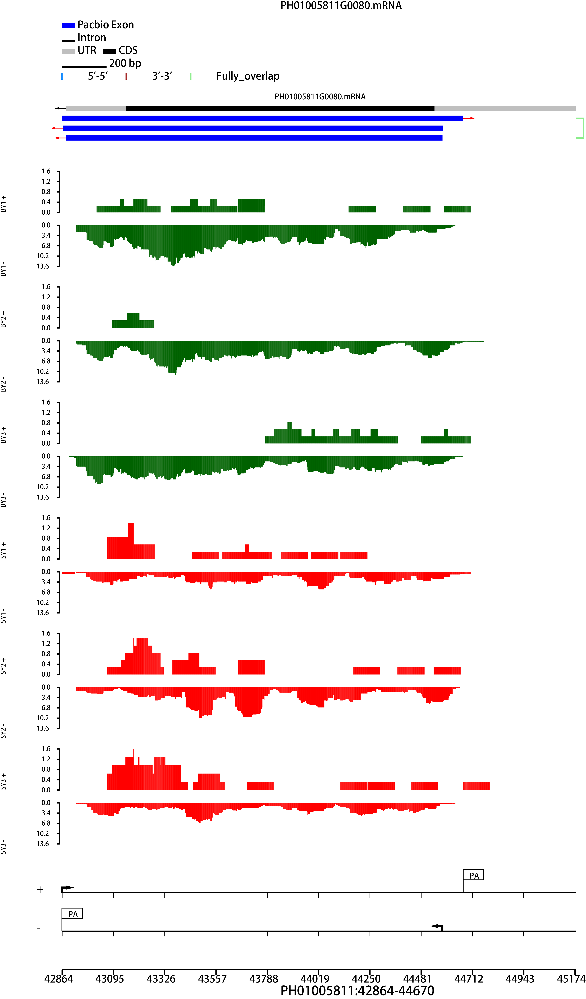
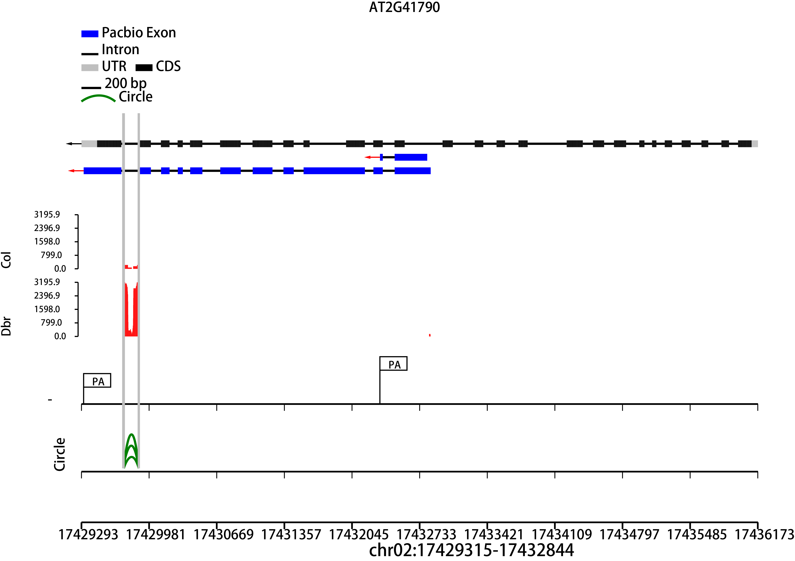
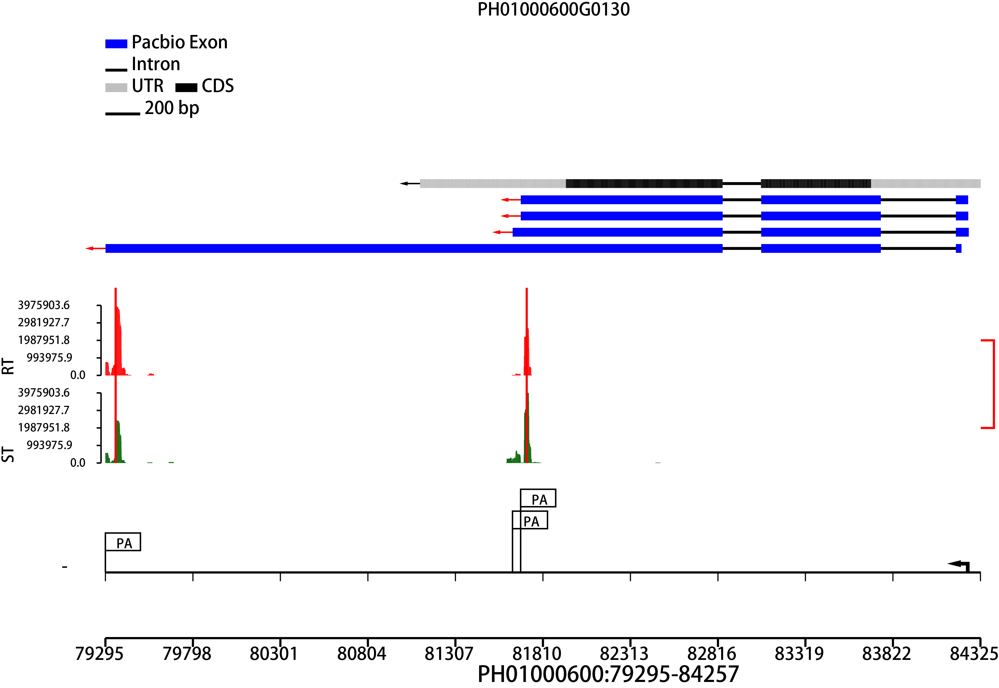
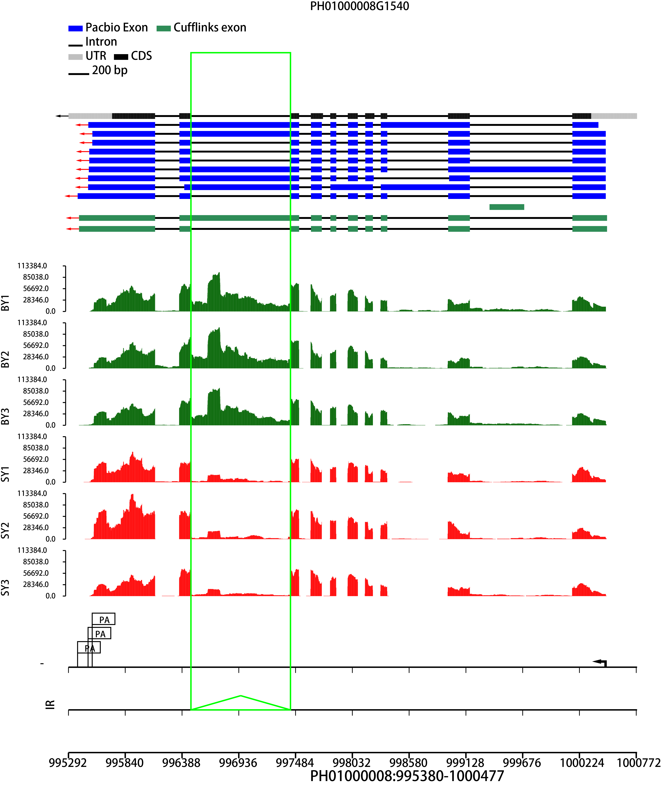
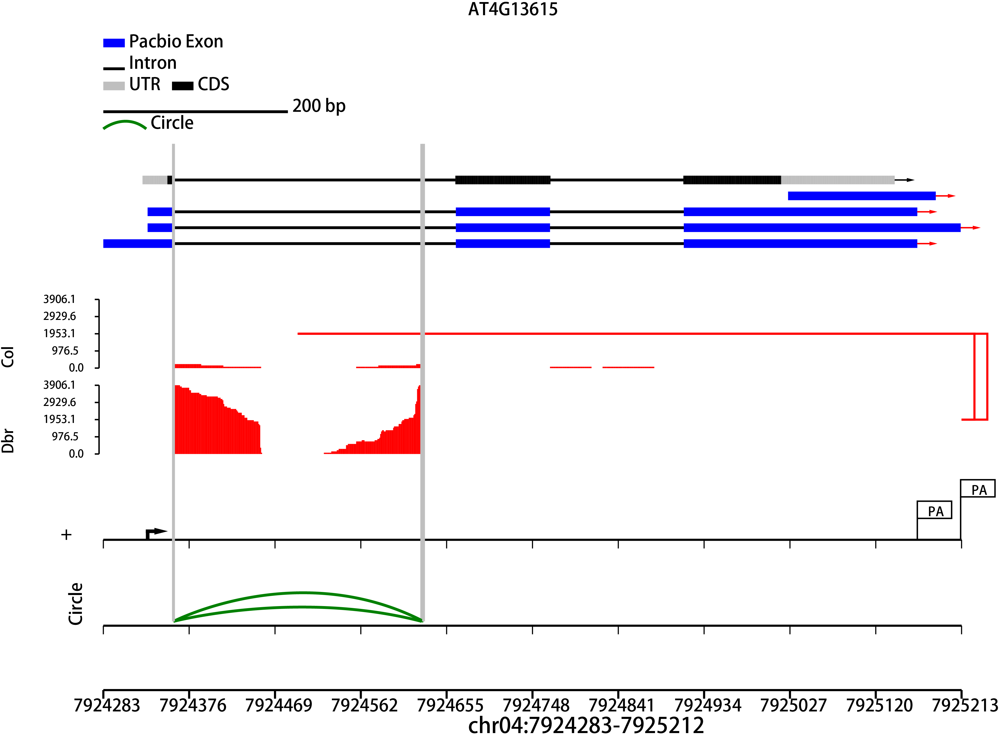
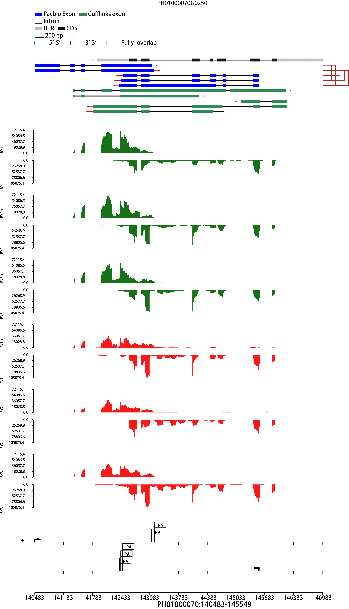
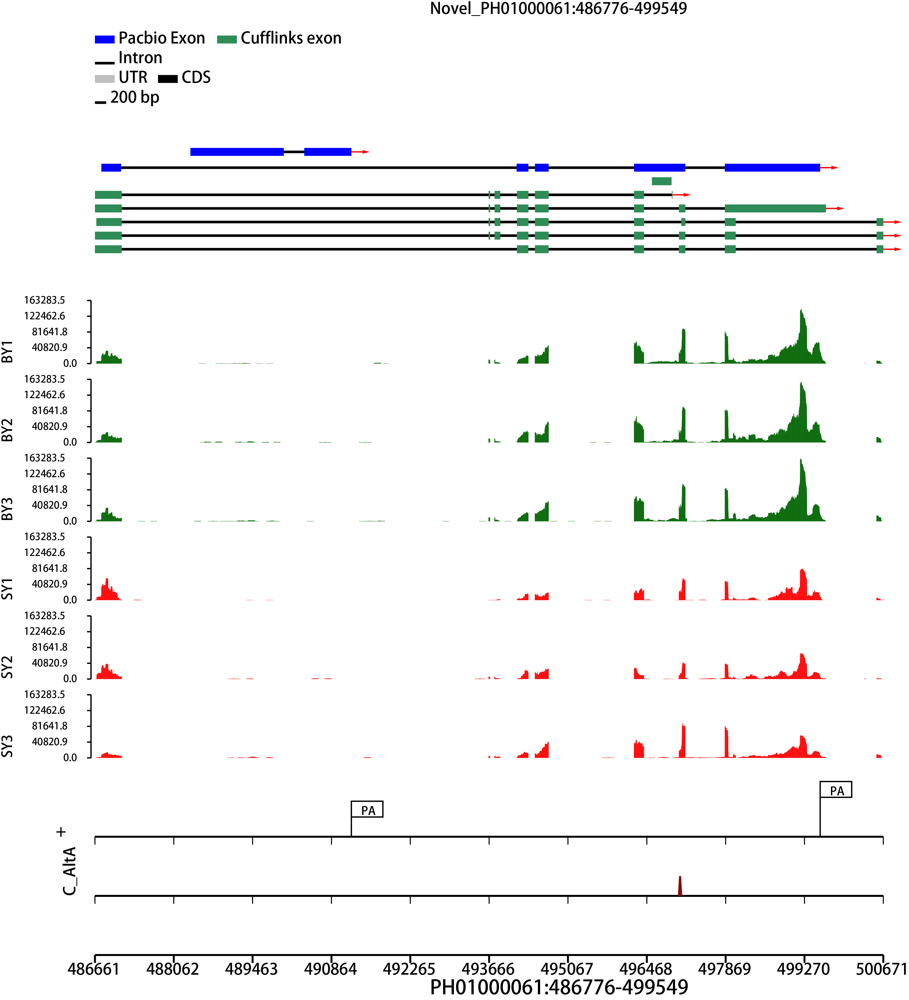

Alternative cleavage and polyadenylation(APA),Alternative transcription initiation (ATI)
Transcript start sites and terminal sites of Iso-Seq reads possessing an end-to-end read alignment with no more than 5bp trimmed/clipped region are kept for the identification of ATI and APA with the default option of PRAPI to discard trimmed/clipped alignment. Micro-heterogeneity sites are clustered with 25nt window and the default number of supporting reads is 2 and 1 for ATI and APA, respectively.
Alternative cleavage and polyadenylation(APA),Alternative transcription initiation (ATI).
TAPIS (Abdel-Ghany et al., 2016), identify AS events based on only third generation sequencing, which makes it the natural point of reference tool for our comparisons. However, TAPIS excluded AS events at 5' or 3'-end flanking region (Following Figure). The public evidence suggests that this kind of AS type is real, thus PRAPI includes this AS type at present version.
PRAPI identifies NAT pairs that have overlapping regions between two oppositely oriented Iso-Seq. The resulting NAT pairs are mainly categorized into three types: head-to-head, tail-to-tail, and fully overlapping.
Click to Go back.

Circle rna.
PRAPI generates unique splice junctions according to isoforms from Iso-Seq and uses it as the input file for CIRIexplorer (Gao, et al., 2015) to identify circRNAs.
Click to Go back.

Differential expression analysis of APA.
If PAS-seq libraries are provided by users, the summit peaks from PAS-Seq will be called and expression level for the peaks matched with the poly(A) sites from Iso-Seq will be calculated to identify differential APA sites using Fisher's exact test.
Click to Go back.

Differential expression analysis of AS.
PRAPI uses the statistical model from rMATS to identify differential AS events based on RNA-Seq data.
Click to Go back.

Differential expression analysis of Circle.
Read counts for each circRNAs are calculated using user-provided RNase R treatment libraries or non-poly(A)-selected RNA-Seq to identify differential circRNAs. The P values and FDR are calculated using DEGseq.
Click to Go back.

Differential expression analysis of NAT.
Read counts from NAT pairs are calculated using user-provided strand-specific RNA-Seq libraries to identify differential NATs. The P value and FDR are calculated using edgeR.
Click to Go back.

Novel gene.
Novel genes are defined as Iso-Seq clusters that have no corresponding gene annotation. The overlapping intervals in exons of all the Iso-Seq reads are merged into unique coordinates to annotate these novel loci.
Click to Go back.

Miss annotation gene.
Mis-annotation of gene is identified when Iso-Seq reads span two or more different genes.
Click to Go back.